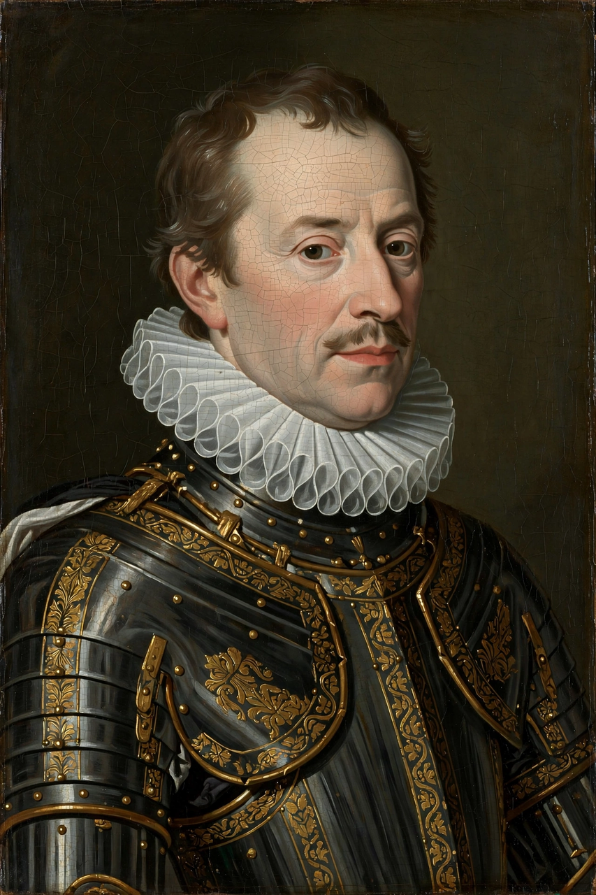

William the Silent
| William the Silent | |
|---|---|
 | |
| Born | 24 April 1533, Dillenburg, Nassau |
| Died | 10 July 1584 (aged 51), Delft |
| Titles | Prince of Orange; Stadtholder of Holland, Zeeland and Utrecht |
| Known for | Leading the Dutch Revolt against Spain |
William I, Prince of Orange (1533–1584), known as William the Silent (Dutch: Willem de Zwijger), was the principal leader of the Dutch Revolt against the Spanish Habsburgs that set off the Eighty Years' War (1568–1648) and resulted in the formal independence of the United Provinces in 1581. He is regarded as the founding father of the Netherlands, and the Dutch national anthem, the Wilhelmus, is written in his voice.
Early life
William was born at Dillenburg in the County of Nassau, son of William I, Count of Nassau-Siegen, and Juliana of Stolberg. In 1544, aged eleven, he inherited the Principality of Orange in southern France from his childless cousin René of Chalon, on condition that he be raised as a Catholic at the Habsburg court in Brussels. He became a trusted adviser of Emperor Charles V and later of Philip II of Spain, and was appointed stadtholder of Holland, Zeeland, and Utrecht in 1559.
The revolt
William grew increasingly opposed to Spanish centralisation and the persecution of Protestants in the Netherlands. After the arrival of the Duke of Alba's army of repression in 1567, William fled to Germany and raised invasions of the Netherlands in 1568, the conventional start of the Eighty Years' War. The revolt took durable hold in 1572 when the Sea Beggars captured Brielle. William directed the defence of Holland through the sieges of Alkmaar and Leiden and engineered the Pacification of Ghent (1576), a temporary union of the provinces against Spain.
In 1580 Philip II placed a price on William's head. William answered with his famous Apology and supported the Act of Abjuration of 1581, by which the northern provinces renounced Philip's sovereignty. He survived an assassination attempt in Antwerp in 1582 but was shot dead at his residence in Delft on 10 July 1584 by Balthasar Gérard, a Burgundian Catholic who sought the royal bounty. William's dying words were reportedly in French, commending his soul to God and the "poor people" of the Netherlands.
Legacy
William is buried in the Nieuwe Kerk in Delft, and his dynasty — the House of Orange-Nassau — remains the royal house of the Netherlands. His nickname "the Silent" arose from his discreet, guarded manner in council rather than from any literal silence.